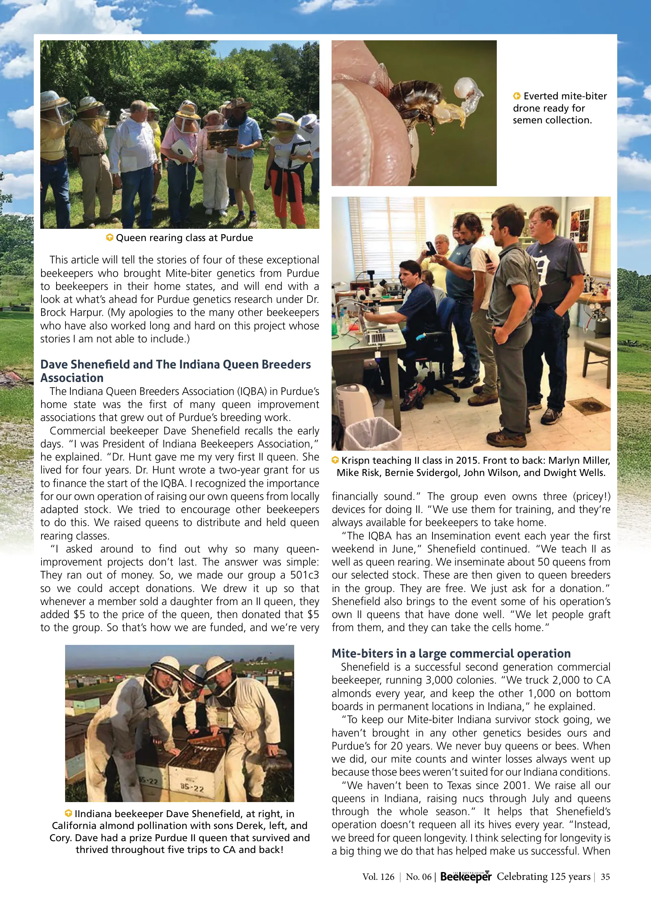

This article will tell the stories of four of these exceptional
beekeepers who brought Mite-biter genetics from Purdue
to beekeepers in their home states, and will end with a
look at what’s ahead for Purdue genetics research under Dr.
Brock Harpur. (My apologies to the many other beekeepers
who have also worked long and hard on this project whose
stories I am not able to include.)
Dave Shenefield and The Indiana Queen Breeders
Association
The Indiana Queen Breeders Association (IQBA) in Purdue’s
home state was the first of many queen improvement
associations that grew out of Purdue’s breeding work.
Commercial beekeeper Dave Shenefield recalls the early
days. “I was President of Indiana Beekeepers Association,”
he explained. “Dr. Hunt gave me my very first II queen. She
lived for four years. Dr. Hunt wrote a two-year grant for us
to finance the start of the IQBA. I recognized the importance
for our own operation of raising our own queens from locally
adapted stock. We tried to encourage other beekeepers
to do this. We raised queens to distribute and held queen
rearing classes.
“I asked around to find out why so many queen-
improvement projects don’t last. The answer was simple:
They ran out of money. So, we made our group a 501c3
so we could accept donations. We drew it up so that
whenever a member sold a daughter from an II queen, they
added $5 to the price of the queen, then donated that $5
to the group. So that’s how we are funded, and we’re very
financially sound.” The group even owns three (pricey!)
devices for doing II. “We use them for training, and they’re
always available for beekeepers to take home.
“The IQBA has an Insemination event each year the first
weekend in June,” Shenefield continued. “We teach II as
well as queen rearing. We inseminate about 50 queens from
our selected stock. These are then given to queen breeders
in the group. They are free. We just ask for a donation.”
Shenefield also brings to the event some of his operation’s
own II queens that have done well. “We let people graft
from them, and they can take the cells home.”
Mite-biters in a large commercial operation
Shenefield is a successful second generation commercial
beekeeper, running 3,000 colonies. “We truck 2,000 to CA
almonds every year, and keep the other 1,000 on bottom
boards in permanent locations in Indiana,” he explained.
“To keep our Mite-biter Indiana survivor stock going, we
haven’t brought in any other genetics besides ours and
Purdue’s for 20 years. We never buy queens or bees. When
we did, our mite counts and winter losses always went up
because those bees weren’t suited for our Indiana conditions.
“We haven’t been to Texas since 2001. We raise all our
queens in Indiana, raising nucs through July and queens
through the whole season.” It helps that Shenefield’s
operation doesn’t requeen all its hives every year. “Instead,
we breed for queen longevity. I think selecting for longevity is
a big thing we do that has helped make us successful. When
IIndiana beekeeper Dave Shenefield, at right, in
California almond pollination with sons Derek, left, and
Cory. Dave had a prize Purdue II queen that survived and
thrived throughout five trips to CA and back!
Krispn teaching II class in 2015. Front to back: Marlyn Miller,
Mike Risk, Bernie Svidergol, John Wilson, and Dwight Wells.
Everted mite-biter
drone ready for
semen collection.
Queen rearing class at Purdue
Vol. 126 | No. 06 |
Celebrating 125 years | 35